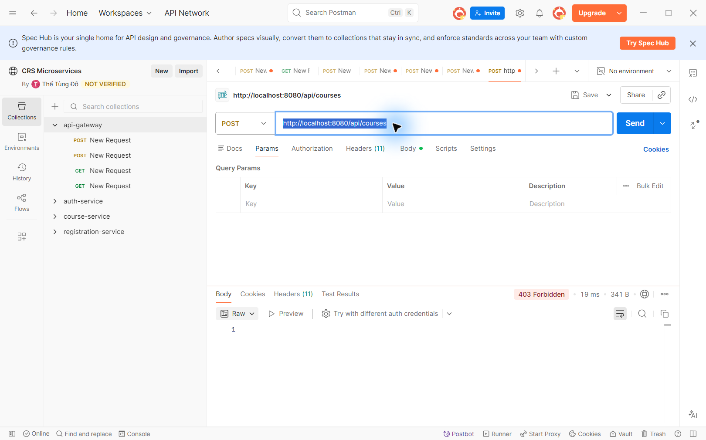
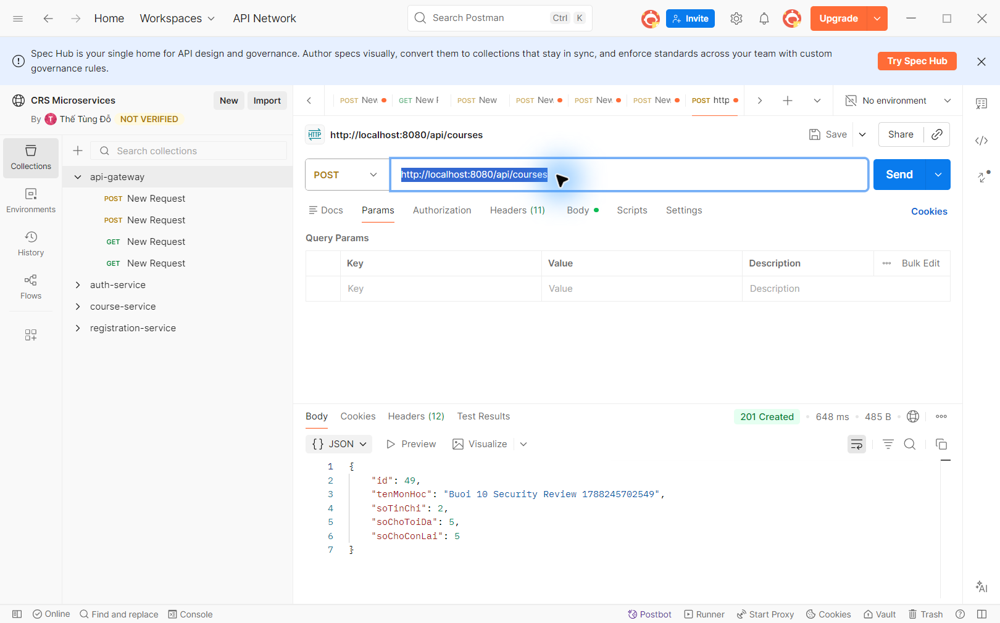
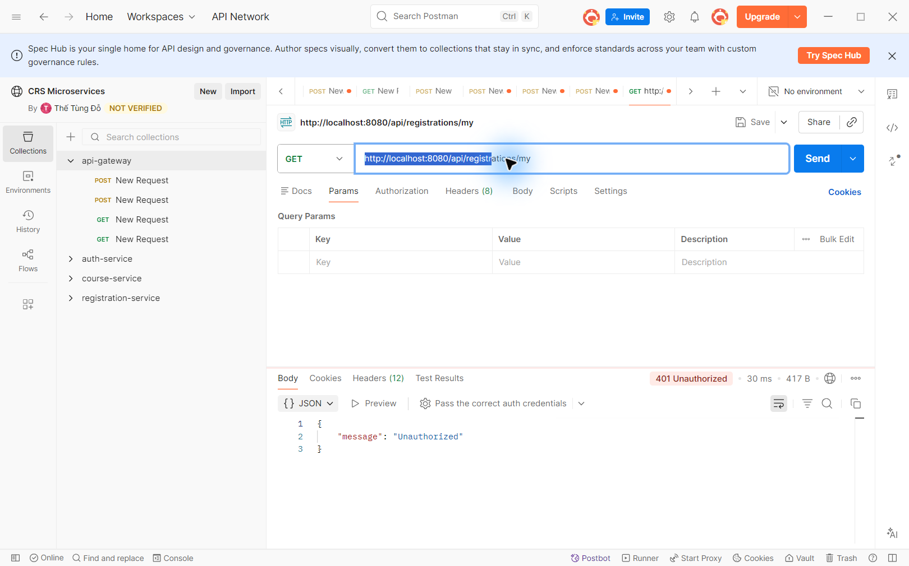
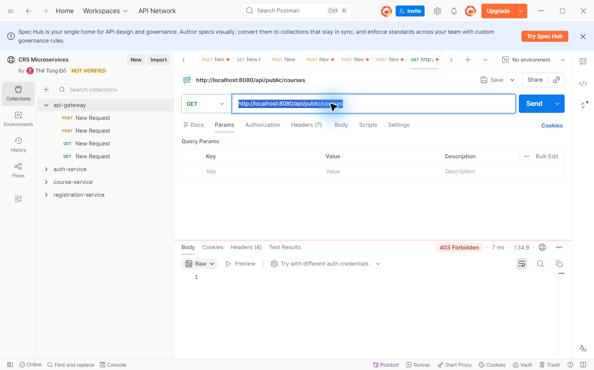
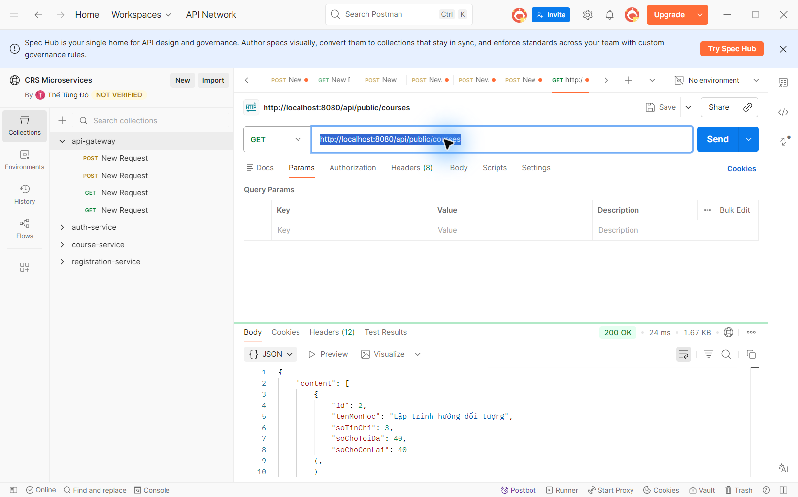
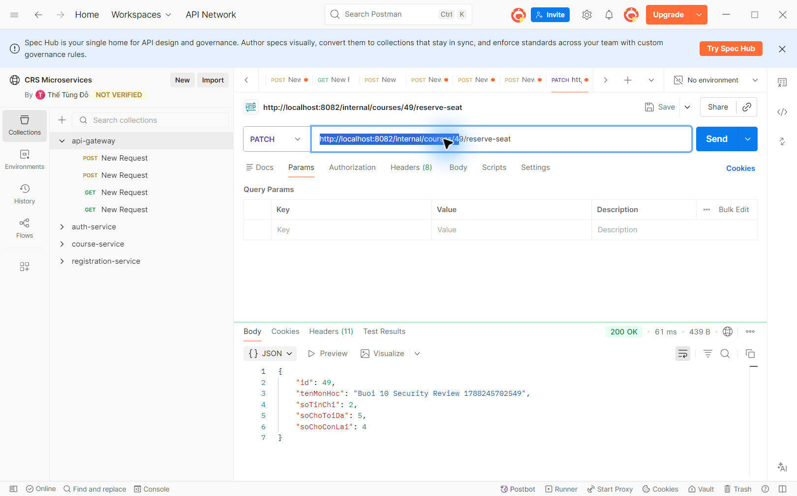

Ngày chạy: 01/09/2026. Thông tin đăng nhập, JWT và API Key không được ghi vào báo cáo này.
| # | Kịch bản | Kỳ vọng | Thực tế | Kết quả |
|---|---|---|---|---|
| 1 | POST /api/registrations không token | 401 | 401 Unauthorized | Đạt |
| 2 | STUDENT POST /api/courses | 403 | 403 Forbidden | Đạt |
| 3 | ADMIN POST /api/courses | 201 | 201 Created | Đạt |
| 4 | JWT bị sửa ký tự trong phần chữ ký gọi /api/registrations/my | 401 | 401 Unauthorized | Đạt |
| 5 | GET /api/public/courses không X-API-KEY | 403 | 403 Forbidden | Đạt |
| 6 | GET /api/public/courses với X-API-KEY đúng | 200 | 200 OK | Đạt |
| 7 | Gọi thẳng PATCH http://localhost:8082/internal/courses/49/reserve-seat, bỏ qua Gateway | 200 | 200 OK, số chỗ 5 xuống 4 | Đạt |
Ca 7 dùng PATCH vì đây là method thực tế được khai báo bởi @PatchMapping và được CourseClient sử dụng. Việc gọi thẳng vẫn thành công là giới hạn đã biết của thiết kế Buổi 4; endpoint nội bộ dựa vào việc Gateway không định tuyến ra ngoài, không dựa vào xác thực riêng.





